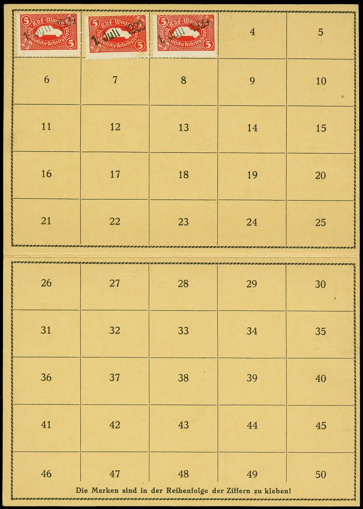
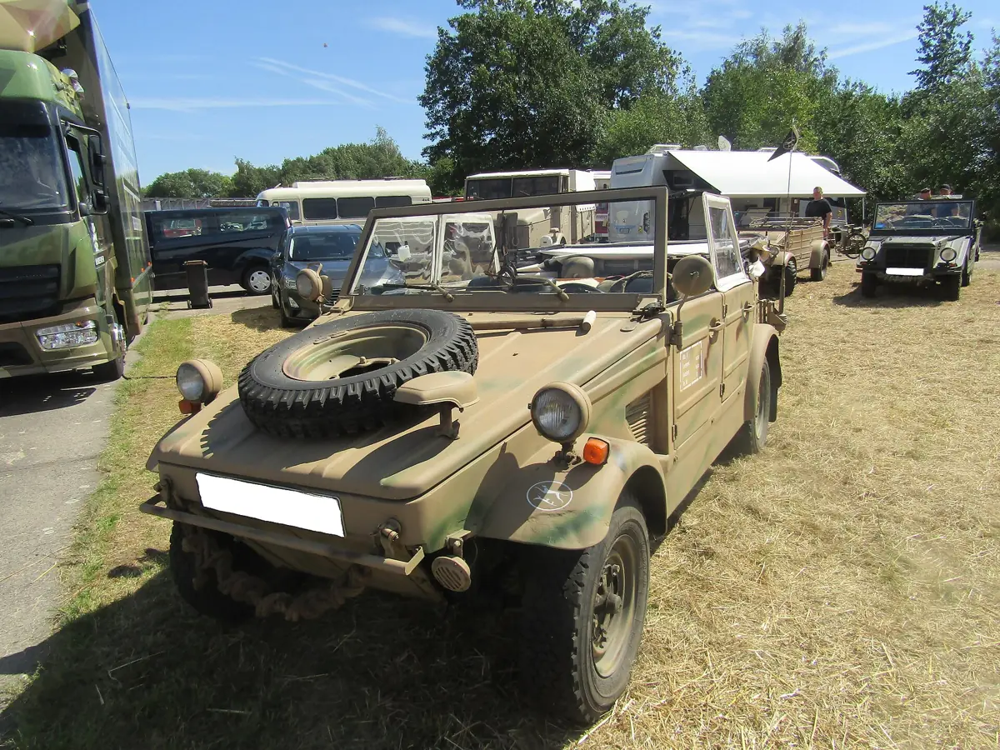
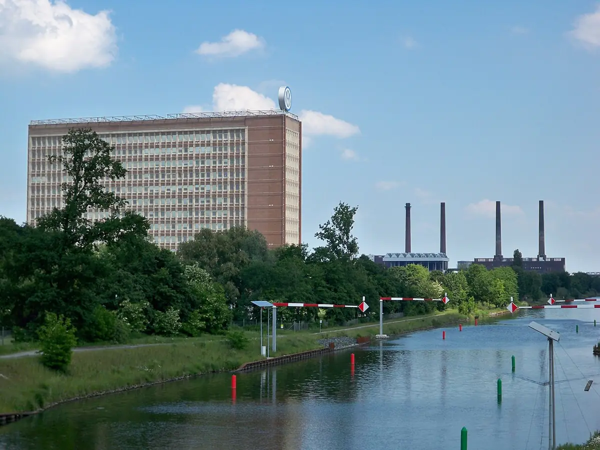
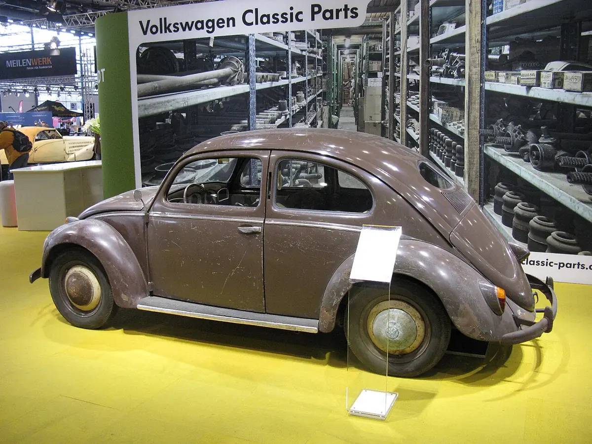
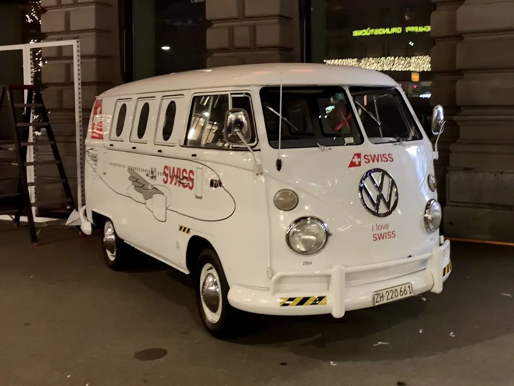
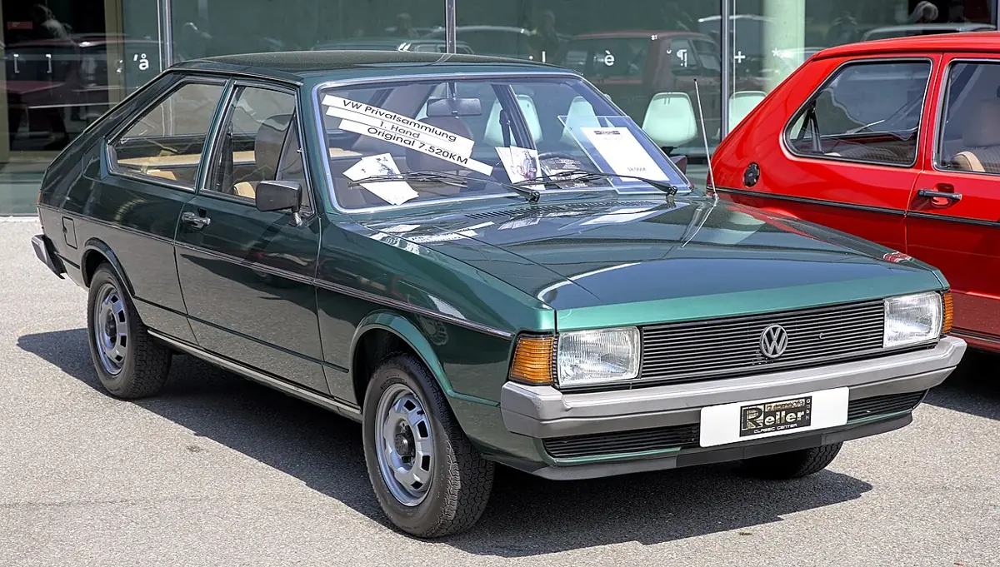
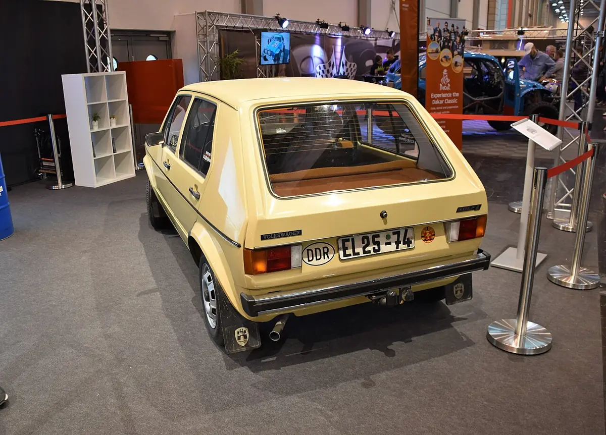
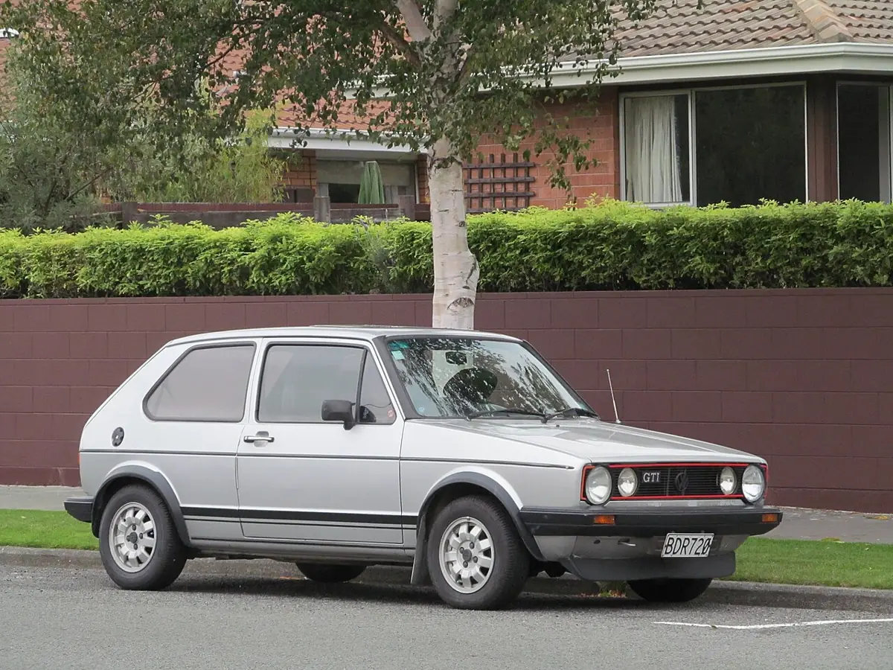
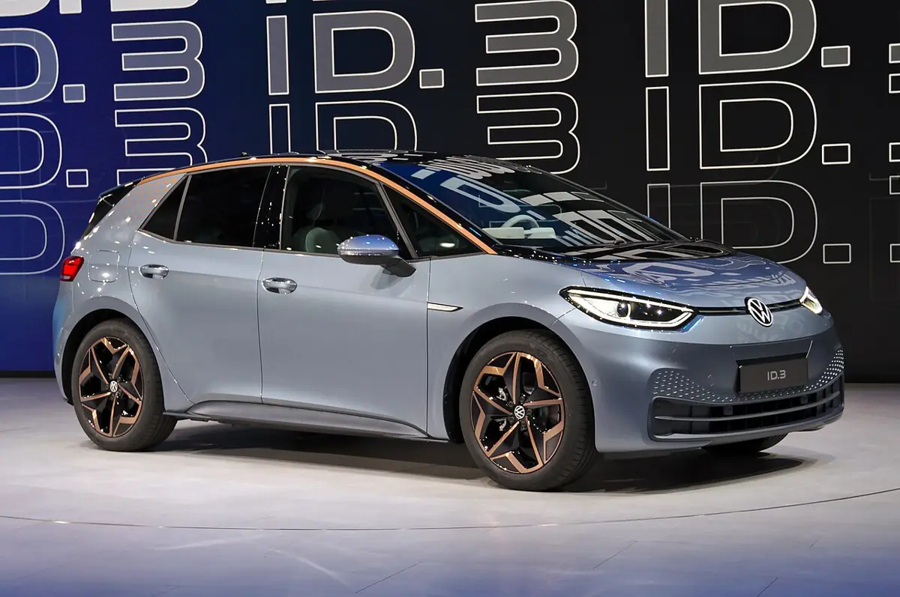
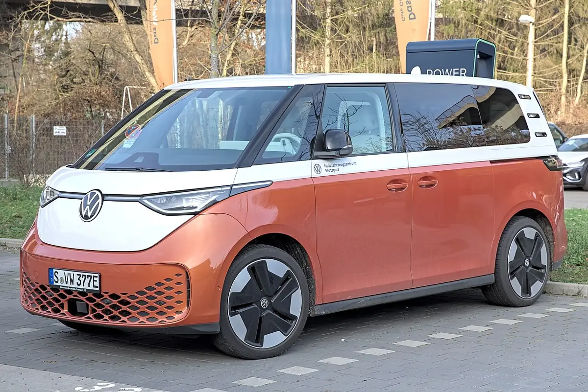

Par Motor › Historia del motor › Volkswagen
Historia del motorVolkswagen: la historia completa

Este es el Volkswagen Escarabajo. El coche más fabricado de la historia con un mismo diseño básico.
Pero la marca que lo creó tuvo un nacimiento muy incómodo.
Y aun así acabó convertida en uno de los mayores fabricantes de coches del mundo. Dueña de SEAT, Audi, Porsche, Lamborghini, Bentley o Bugatti.
Esta es la historia completa de Volkswagen.
1937 · Coche del pueblo
Volkswagen nace en 1937, en la Alemania nazi. Su nombre significa literalmente «coche del pueblo».
El encargo de diseñarlo lo recibe Ferdinand Porsche. Debía ser barato, para cuatro personas y capaz de ir por las nuevas autopistas.

Cientos de miles de alemanes empiezan a pagarlo por adelantado con cartillas de sellos de ahorro.
Pero casi ninguno llegó a recibirlo. En 1939 estalla la Segunda Guerra Mundial.

La fábrica se dedica a vehículos militares, como el Kübelwagen.
Y utiliza miles de trabajadores forzados. Volkswagen lo reconoce hoy públicamente y ha indemnizado a supervivientes.
1945 · Fábrica en ruinas
Cuando termina la guerra, en 1945, la fábrica está medio destruida. Y queda en la zona controlada por el ejército británico.
Allí aparece un oficial británico, el mayor Ivan Hirst. En lugar de desmontar la fábrica, decide ponerla en marcha.
Convence al ejército británico para que encargue veinte mil coches. Y así salva la fábrica y miles de empleos.
Curiosamente, los expertos británicos que lo analizaron dijeron que aquel coche no tenía futuro.

La ciudad que había crecido alrededor de la fábrica pasa a llamarse Wolfsburgo. Allí sigue hoy la sede de la marca.
1948 · Heinrich nordhoff
En 1948 llega un nuevo director, Heinrich Nordhoff. Y empieza el gran milagro.

El Escarabajo se exporta a todo el mundo. Barato, fiable y fácil de reparar.

En 1950 llega su hermano: la furgoneta Tipo 2, que muchos conocen como el Bulli. Con los años se convertirá en un símbolo de los viajes y del movimiento hippie.
En 1955 sale de la fábrica el Escarabajo un millón.
En Estados Unidos, una campaña de publicidad con un mensaje sencillo, «piensa en pequeño», lo convierte en un coche de culto.
A mediados de los sesenta, Volkswagen compra Auto Union, la empresa de la que nacerá la Audi moderna.
Crisis
Pero a principios de los setenta el Escarabajo se ha quedado viejo. Las ventas caen y Volkswagen pierde dinero.
La gran pregunta es qué viene después de un coche tan exitoso.

La respuesta llega en cadena: el Passat, en 1973…

…y en 1974 el Golf, diseñado por Giorgetto Giugiaro. Motor delante, tracción delantera y un éxito inmediato.

Dos años después nace el Golf GTI. Y con él, una categoría nueva: el compacto deportivo.
En 1978 deja de fabricarse el Escarabajo en Alemania. Pero sigue en México durante veinticinco años más.
El último sale de Puebla en 2003. En total, más de veintiún millones de unidades.
Comprar marcas
Desde los ochenta, Volkswagen hace algo que la convertirá en un gigante: comprar marcas.
En 1986 entra en SEAT, y en 1991 en la checa Škoda.
En 1998, de golpe, Bentley, Bugatti y Lamborghini.
Y años después, Porsche. La empresa que diseñó el Escarabajo acabó dentro de la familia del Escarabajo.
Hoy el grupo Volkswagen es uno de los mayores fabricantes de coches del mundo, compitiendo con Toyota por el primer puesto.
2015 · Dieselgate
Pero en 2015 estalla el mayor escándalo de su historia.
Se descubre que millones de coches diésel llevaban un programa que detectaba las pruebas de emisiones… y contaminaba mucho menos solo mientras lo estaban examinando.
Le cuesta a la empresa miles de millones en multas e indemnizaciones, y su presidente dimite.
Después del escándalo, Volkswagen apuesta fuerte por el coche eléctrico.

En 2019 presenta el ID.3, su primer modelo eléctrico diseñado desde cero.

Y luego el ID. Buzz: un homenaje eléctrico a aquella furgoneta Tipo 2 de los años cincuenta.
Del «coche del pueblo» al gigante
Así que el coche del pueblo nació en una época oscura, lo salvó un militar británico… y acabó levantando uno de los mayores imperios del automóvil.
¿El Escarabajo, el Golf o la furgoneta?
Más curiosidades de Volkswagen
¿Cuánto vale hoy un Volkswagen?
Consulta el precio justo de segunda mano de cualquier modelo, año por año, con el tasador gratis de Par Motor.
Ver precios por modelo →